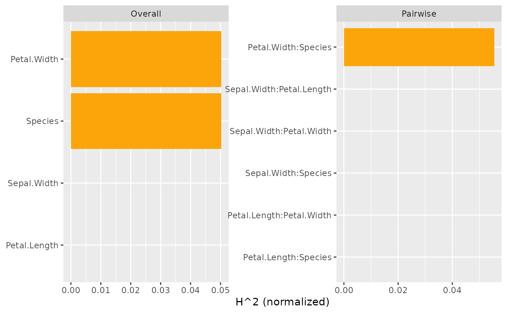
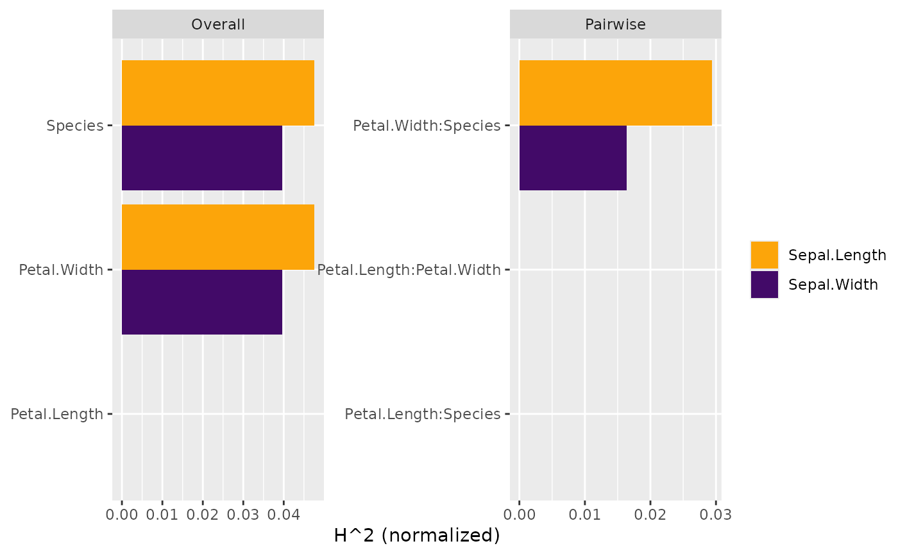

This is the main function of the package. It does the expensive calculations behind the following interaction statistics:
Total interaction strength \(H^2\), a statistic measuring the proportion of
prediction variability unexplained by main effects of v, see h2() for details.
Friedman and Popescu's \(H^2_j\) statistic of overall interaction strength per
feature, see h2_overall() for details.
Friedman and Popescu's \(H^2_{jk}\) statistic of pairwise interaction strength,
see h2_pairwise() for details.
Friedman and Popescu's \(H^2_{jkl}\) statistic of three-way interaction strength,
see h2_threeway() for details.
Furthermore, it allows to calculate an experimental partial dependence based
measure of feature importance, \(\textrm{PDI}_j^2\). It equals the proportion of
prediction variability unexplained by other features, see pd_importance()
for details. (This statistic is not shown by summary() or plot().)
Instead of using summary(), interaction statistics can also be obtained via the
more flexible functions h2(), h2_overall(), h2_pairwise(), and
h2_threeway().
hstats(object, ...)
# S3 method for default
hstats(
object,
v,
X,
pred_fun = stats::predict,
n_max = 300L,
w = NULL,
pairwise_m = 5L,
threeway_m = pairwise_m,
verbose = TRUE,
...
)
# S3 method for ranger
hstats(
object,
v,
X,
pred_fun = function(m, X, ...) stats::predict(m, X, ...)$predictions,
n_max = 300L,
w = NULL,
pairwise_m = 5L,
threeway_m = pairwise_m,
verbose = TRUE,
...
)
# S3 method for Learner
hstats(
object,
v,
X,
pred_fun = function(m, X) m$predict_newdata(X)$response,
n_max = 300L,
w = NULL,
pairwise_m = 5L,
threeway_m = pairwise_m,
verbose = TRUE,
...
)
# S3 method for explainer
hstats(
object,
v = colnames(object[["data"]]),
X = object[["data"]],
pred_fun = object[["predict_function"]],
n_max = 300L,
w = object[["weights"]],
pairwise_m = 5L,
threeway_m = pairwise_m,
verbose = TRUE,
...
)Fitted model object.
Additional arguments passed to pred_fun(object, X, ...),
for instance type = "response" in a glm() model.
Vector of feature names.
A data.frame or matrix serving as background dataset.
Prediction function of the form function(object, X, ...),
providing \(K \ge 1\) numeric predictions per row. Its first argument represents the
model object, its second argument a data structure like X. Additional arguments
(such as type = "response" in a GLM) can be passed via .... The default,
stats::predict(), will work in most cases. Note that column names in a resulting
matrix of predictions will be used as default column names in the results.
If X has more than n_max rows, a random sample of n_max rows is
selected from X. In this case, set a random seed for reproducibility.
Optional vector of case weights for each row of X.
Number of features for which pairwise statistics are to be
calculated. The features are selected based on Friedman and Popescu's overall
interaction strength \(H^2_j\).
Set to length(v) to calculate every pair and to 0 to avoid pairwise calculations.
For multivariate predictions, the union of the column-wise strongest variable
names is taken. This can lead to very long run-times.
Same as pairwise_m, but controlling the number of features for
which threeway interactions should be calculated. Not larger than pairwise_m.
Should a progress bar be shown? The default is TRUE.
An object of class "hstats" containing these elements:
X: Input X (sampled to n_max rows).
w: Input w (sampled to n_max values, or NULL).
v: Same as input v.
f: Matrix with (centered) predictions \(F\).
mean_f2: (Weighted) column means of f. Used to normalize most statistics.
F_j: List of matrices, each representing (centered)
partial dependence functions \(F_j\).
F_not_j: List of matrices with (centered) partial dependence
functions \(F_{\setminus j}\) of other features.
K: Number of columns of prediction matrix.
pred_names: Column names of prediction matrix.
v_pairwise: Subset of v with largest h2_overall() used for pairwise
calculations.
combs2: Named list of variable pairs for which pairwise partial
dependence functions are available.
F_jk: List of matrices, each representing (centered) bivariate
partial dependence functions \(F_{jk}\).
v_threeway: Subset of v with largest h2_overall() used for three-way
calculations.
combs3: Named list of variable triples for which three-way partial
dependence functions are available.
F_jkl: List of matrices, each representing (centered) three-way
partial dependence functions \(F_{jkl}\).
hstats(default): Default hstats method.
hstats(ranger): Method for "ranger" models.
hstats(Learner): Method for "mlr3" models.
hstats(explainer): Method for DALEX "explainer".
Friedman, Jerome H., and Bogdan E. Popescu. "Predictive Learning via Rule Ensembles." The Annals of Applied Statistics 2, no. 3 (2008): 916-54.
h2(), h2_overall(), h2_pairwise(), h2_threeway(),
and pd_importance() for specific statistics calculated from the resulting object.
# MODEL 1: Linear regression
fit <- lm(Sepal.Length ~ . + Petal.Width:Species, data = iris)
s <- hstats(fit, v = names(iris[-1]), X = iris, verbose = FALSE)
s
#> 'hstats' object. Run plot() or summary() for details.
#>
#> Proportion of prediction variability unexplained by main effects of v:
#> [1] 0.0502364
#>
plot(s)

summary(s)
#> Proportion of prediction variability unexplained by main effects of v
#> [1] 0.0502364
#>
#> Strongest overall interactions
#> [,1]
#> Species 0.0502364
#> Petal.Width 0.0502364
#> Sepal.Width 0.0000000
#> Petal.Length 0.0000000
#>
#> Strongest relative pairwise interactions
#> (only for features with strong overall interactions)
#> [,1]
#> Petal.Width:Species 0.05546172
#>
# Absolute pairwise interaction strengths
h2_pairwise(s, normalize = FALSE, squared = FALSE, plot = FALSE)
#> [,1]
#> Petal.Width:Species 0.1726312
# MODEL 2: Multi-response linear regression
fit <- lm(as.matrix(iris[1:2]) ~ Petal.Length + Petal.Width * Species, data = iris)
v <- c("Petal.Length", "Petal.Width", "Species")
s <- hstats(fit, v = v, X = iris, verbose = FALSE)
plot(s)
summary(s)
#> Proportion of prediction variability unexplained by main effects of v
#> Sepal.Length Sepal.Width
#> 0.04758952 0.03963575
#>
#> Strongest overall interactions
#> Sepal.Length Sepal.Width
#> Species 0.04758952 0.03963575
#> Petal.Width 0.04758952 0.03963575
#> Petal.Length 0.00000000 0.00000000
#>
#> Strongest relative pairwise interactions
#> (only for features with strong overall interactions)
#> Sepal.Length Sepal.Width
#> Petal.Width:Species 0.02937378 0.01637166
#>
# MODEL 3: Gamma GLM with log link
fit <- glm(Sepal.Length ~ ., data = iris, family = Gamma(link = log))
# No interactions for additive features, at least on link scale
s <- hstats(fit, v = names(iris[-1]), X = iris, verbose = FALSE)
summary(s)
#> Proportion of prediction variability unexplained by main effects of v
#> [1] 0
#>
#> Strongest overall interactions
#> [,1]
#> Sepal.Width 0
#> Petal.Length 0
#> Petal.Width 0
#> Species 0
#>
# On original scale, we have interactions everywhere...
s <- hstats(
fit, v = names(iris[-1]), X = iris, type = "response", verbose = FALSE
)
# All three types use different denominators
plot(s, which = 1:3, ncol = 1)

# All statistics on same scale (of predictions)
plot(s, which = 1:3, squared = FALSE, normalize = FALSE, facet_scale = "free_y")